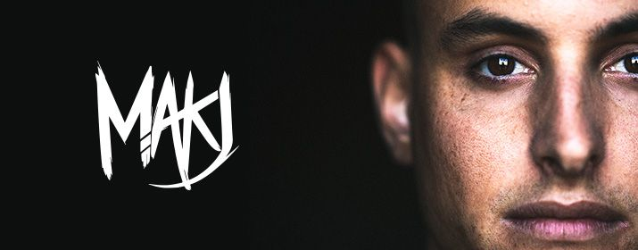

Mainstage
Mackenzie Johnson, alias MAKJ, wuchs in China auf, wo er professioneller Rennfahrer
war und kehrte mit 17 Jahren nach Amerika zurück, wo seine Karriere als DJ begann. Er
performte 2013 und 2014 am Ultra Music Festival in Miami und verdiente sich 2013
einen Slot auf der Main Stage des Tomorrow World in Georgia.
2013 tourte er mit Bingo Players und Bassjackers durch Nord Amerika. MAKJ bekommt
gewaltige Unterstützung von namhaften Künstlern, wie Hardwell, Tiesto, Afrojack,
Porter Robinson, Chuckie, Avicii, Laidback Luke, Nicky Romero, Nervo, Bingo Players,
Sander Van Doorn, W&W, Showtek, David Guetta und vielen anderen.
MAKJ veröffentlichte 2013 Kollaborationen mit Hardwell Countdown, sowie Springen
und CryEncore mit Bingo Players, Hakakaund Hold Up. 2014 folgten
Zusammenarbeiten mit MC Lil Jon und Let´s Get F*cked Up, sowie DERPmit
Bassjackers.
Der junge DJ möchte sich nicht einem Genre verschreiben: “I just like being able to dip
my feet into all genres. It gives an artist longevity if they’re able to produce multiple
genres.”